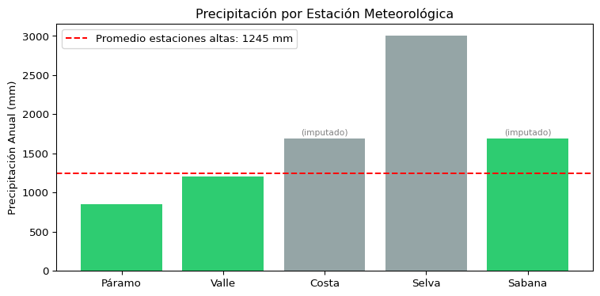

Capítulo 11 – Analítica Espacial: Arreglos y Tablas - Ejercicios
Programación SIG: Python, R y Julia
Author
Lina
Published
March 15, 2026
Introducción
En este documento se resuelven los dos ejercicios propuestos en el Capítulo 11 del curso de Programación SIG, enfocados en operaciones vectorizadas con NumPy, manipulación tabular con Pandas, imputación de datos nulos y filtrado espacial.
Ejercicio 1: Vectorización y álgebra espacial (Haversine)
Construcción del DataFrame base
Primero construimos el DataFrame censal con las cuatro ciudades principales, tal como se hizo en la sección 11.7 del capítulo.
DataFrame base:
Ciudad Region Poblacion Latitud Longitud Elevacion
0 Bogotá Andina 7181469 4.7110 -74.0721 2640
1 Medellín Andina 2529403 6.2442 -75.5812 1495
2 Cali Pacífica 2227642 3.4516 -76.5320 1018
3 Barranquilla Caribe 1206319 10.9685 -74.7813 18
Función Haversine vectorizada
La fórmula de Haversine calcula la distancia sobre la superficie de la esfera terrestre entre dos puntos dados en coordenadas geográficas. La implementamos de forma vectorizada, es decir, opera directamente sobre columnas completas del DataFrame sin necesidad de ciclos for.
Se eligió este enfoque porque NumPy ejecuta las operaciones trigonométricas en bloque sobre arreglos completos usando rutinas optimizadas en C, lo cual es órdenes de magnitud más rápido que iterar fila por fila en Python puro.
def calcular_distancias(df, lat_ref=4.7110, lon_ref=-74.0721):""" Calcula la distancia Haversine desde un punto de referencia (por defecto Bogotá) hacia todas las filas del DataFrame, de forma vectorizada. Argumentos: df (pd.DataFrame): DataFrame con columnas 'Latitud' y 'Longitud'. lat_ref (float): Latitud del punto de referencia en grados decimales. lon_ref (float): Longitud del punto de referencia en grados decimales. Retorna: pd.DataFrame: DataFrame original con la nueva columna 'Distancia_Bogota' (km). """# Radio medio de la Tierra en kilómetros R =6371.0# Convertir grados a radianes de forma vectorizada (columnas completas) lat1 = np.radians(lat_ref) lon1 = np.radians(lon_ref) lat2 = np.radians(df["Latitud"].values) lon2 = np.radians(df["Longitud"].values)# Diferencias vectorizadas dlat = lat2 - lat1 dlon = lon2 - lon1# Fórmula de Haversine aplicada element-wise sobre los arreglos a = np.sin(dlat /2)**2+ np.cos(lat1) * np.cos(lat2) * np.sin(dlon /2)**2 c =2* np.arctan2(np.sqrt(a), np.sqrt(1- a))# Distancia en kilómetros distancia_km = R * c# Agregar la nueva columna al DataFrame df_resultado = df.copy() df_resultado["Distancia_Bogota"] = np.round(distancia_km, 2)return df_resultado
Ejecución y resultados
df_con_distancias = calcular_distancias(df)print("DataFrame con distancias desde Bogotá (km):\n")print(df_con_distancias[["Ciudad", "Latitud", "Longitud", "Distancia_Bogota"]])
DataFrame con distancias desde Bogotá (km):
Ciudad Latitud Longitud Distancia_Bogota
0 Bogotá 4.7110 -74.0721 0.00
1 Medellín 6.2442 -75.5812 238.67
2 Cali 3.4516 -76.5320 306.67
3 Barranquilla 10.9685 -74.7813 700.17
Verificación rápida
La distancia Bogotá–Bogotá debe ser 0 km, y las distancias a las demás ciudades deben ser coherentes con la geografía colombiana (Medellín ~250 km, Cali ~300 km, Barranquilla ~700 km).
print("\nVerificación de distancias:")for _, fila in df_con_distancias.iterrows():print(f" Bogotá → {fila['Ciudad']}: {fila['Distancia_Bogota']} km")
Verificación de distancias:
Bogotá → Bogotá: 0.0 km
Bogotá → Medellín: 238.67 km
Bogotá → Cali: 306.67 km
Bogotá → Barranquilla: 700.17 km
Ejercicio 2: Limpieza, filtros y agregación tabular
Paso 1: Creación del DataFrame con datos nulos
Creamos el DataFrame de estaciones meteorológicas tal como lo indica el enunciado. Usamos np.nan como representación del valor nulo en Python/Pandas, ya que es el estándar para datos faltantes en columnas numéricas de tipo float.
# Creación del DataFrame con datos nulos (sensores fallidos en Costa y Sabana)df_estaciones = pd.DataFrame({"Estacion": ["Páramo", "Valle", "Costa", "Selva", "Sabana"],"Elevacion": [3200, 1500, 15, 200, 2600],"Precipitacion": [850.5, 1200.0, np.nan, 3000.5, np.nan]})print("DataFrame original (con datos nulos):\n")print(df_estaciones)print(f"\nValores nulos por columna:\n{df_estaciones.isna().sum()}")
DataFrame original (con datos nulos):
Estacion Elevacion Precipitacion
0 Páramo 3200 850.5
1 Valle 1500 1200.0
2 Costa 15 NaN
3 Selva 200 3000.5
4 Sabana 2600 NaN
Valores nulos por columna:
Estacion 0
Elevacion 0
Precipitacion 2
dtype: int64
Paso 2: Imputación de valores nulos
Los sensores de la Costa y la Sabana fallaron. Rellenamos los valores nulos con la media de las estaciones que sí tienen datos válidos.
Se eligió fillna() con la media porque es la técnica de imputación más simple y adecuada cuando no se dispone de información auxiliar (como una serie temporal o estaciones vecinas). Pandas calcula la media automáticamente ignorando los NaN por defecto en .mean().
# Calcular la media de precipitación ignorando nulosmedia_precipitacion = df_estaciones["Precipitacion"].mean()print(f"Media de precipitación (estaciones válidas): {media_precipitacion:.2f} mm\n")# Imputar los valores nulos con la media calculadadf_estaciones["Precipitacion"] = df_estaciones["Precipitacion"].fillna(media_precipitacion)print("DataFrame después de imputación:\n")print(df_estaciones)
Media de precipitación (estaciones válidas): 1683.67 mm
DataFrame después de imputación:
Estacion Elevacion Precipitacion
0 Páramo 3200 850.500000
1 Valle 1500 1200.000000
2 Costa 15 1683.666667
3 Selva 200 3000.500000
4 Sabana 2600 1683.666667
Paso 3: Filtro espacial (estaciones altas)
Extraemos en un nuevo DataFrame solo las estaciones cuya elevación sea estrictamente mayor a 1000 metros. Usamos indexación booleana directamente sobre la columna Elevacion, lo cual es más eficiente y legible que un ciclo for con condicionales.
Paso 4: Cálculo final – Precipitación promedio en estaciones altas
precipitacion_promedio_altas = estaciones_altas["Precipitacion"].mean()print(f"\nPrecipitación promedio anual en estaciones altas: "f"{precipitacion_promedio_altas:.2f} mm")
Precipitación promedio anual en estaciones altas: 1244.72 mm
Visualización complementaria
Generamos un gráfico de barras para comparar visualmente la precipitación entre todas las estaciones, destacando cuáles fueron imputadas.
import matplotlib.pyplot as pltfig, ax = plt.subplots(figsize=(8, 4))colores = ["#2ecc71"if elev >1000else"#95a5a6"for elev in df_estaciones["Elevacion"]]ax.bar(df_estaciones["Estacion"], df_estaciones["Precipitacion"], color=colores)ax.set_ylabel("Precipitación Anual (mm)")ax.set_title("Precipitación por Estación Meteorológica")ax.axhline(y=precipitacion_promedio_altas, color="red", linestyle="--", label=f"Promedio estaciones altas: {precipitacion_promedio_altas:.0f} mm")ax.legend()# Anotar estaciones imputadasfor i, est inenumerate(df_estaciones["Estacion"]):if est in ["Costa", "Sabana"]: ax.annotate("(imputado)", (i, df_estaciones["Precipitacion"].iloc[i] +50), ha="center", fontsize=8, color="gray")plt.tight_layout()plt.show()

Comentarios sobre decisiones de diseño
¿Por qué fillna() con la media? Se optó por imputar con la media aritmética de las estaciones válidas porque, en ausencia de datos auxiliares (series temporales, interpolación espacial, datos de estaciones vecinas), la media es el estimador insesgado más simple. En un contexto SIG real, sería preferible usar interpolación espacial (IDW o Kriging) aprovechando la ubicación geográfica de las estaciones, pero eso excede el alcance de este ejercicio introductorio.
¿Por qué indexación booleana y no for? El filtro df[df["Elevacion"] > 1000] aplica la condición de forma vectorizada sobre toda la columna simultáneamente. Esto es más eficiente que iterar fila por fila y además produce código más legible y conciso, que es la filosofía central de Pandas y NumPy.
¿Por qué Haversine vectorizada? Al aplicar np.radians(), np.sin(), np.cos() directamente sobre las columnas (arreglos de NumPy), todas las operaciones trigonométricas se ejecutan en una sola pasada a nivel de C, evitando el overhead del intérprete de Python. Para un DataFrame de 4 filas la diferencia es imperceptible, pero para bases de datos con millones de puntos GPS la ganancia de rendimiento es crítica.